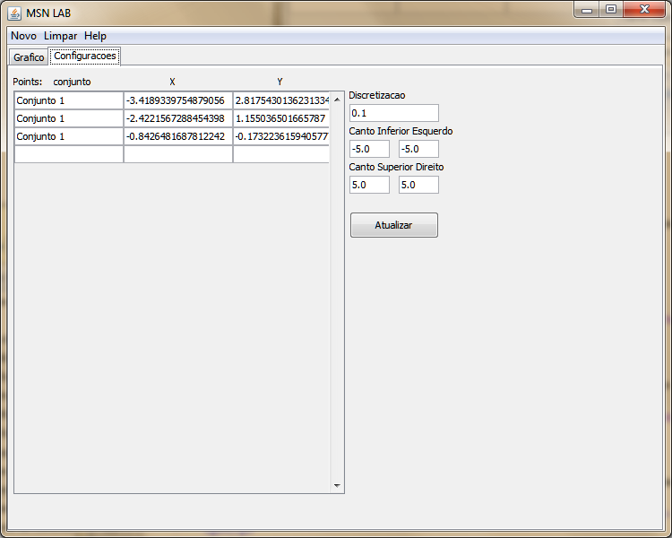
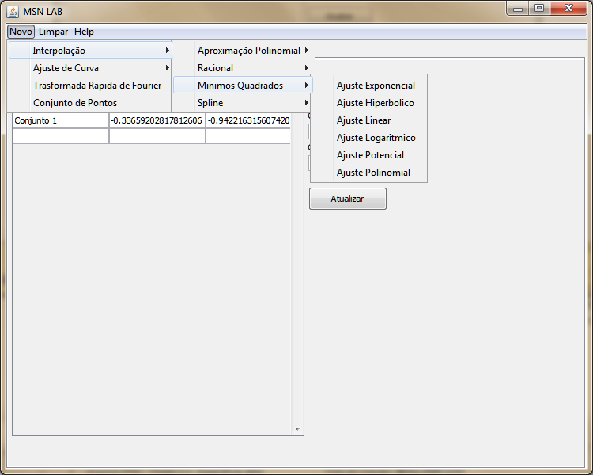
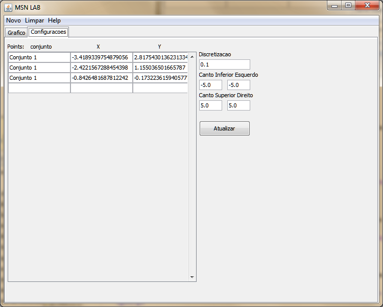
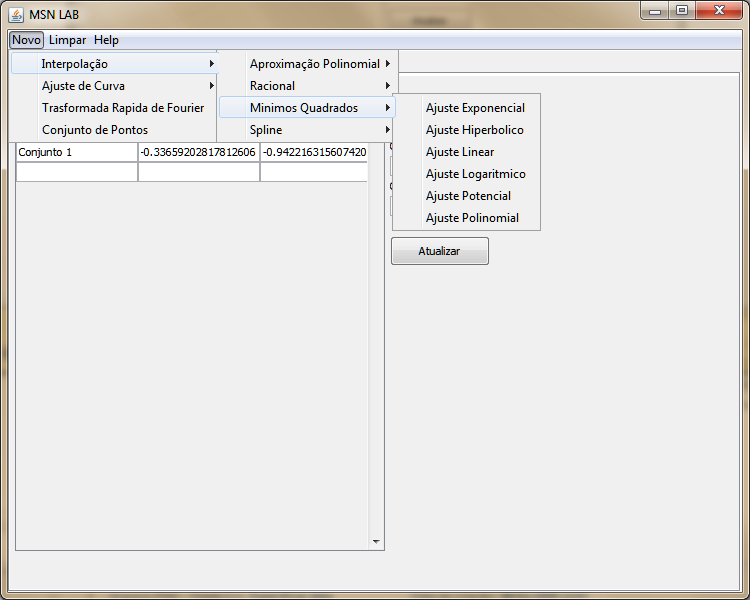

Estabeleça um conjunto de pontos na aba de Configurações.
Clique em Novo -> Interpolação -> Mínimos Quadrados -> Ajuste Logaritmico
O resultado será exposto no gráfico como podemos ver na imagem a seguir:

Ajuste Logaritmico.
Para utilizar esta transfomada no MSN LAB siga as instruções abaixo.
Estabeleça um conjunto de pontos na aba de Configurações.
Clique em Novo -> Interpolação -> Mínimos Quadrados -> Ajuste Logaritmico
O resultado será exposto no gráfico como podemos ver na imagem a seguir: